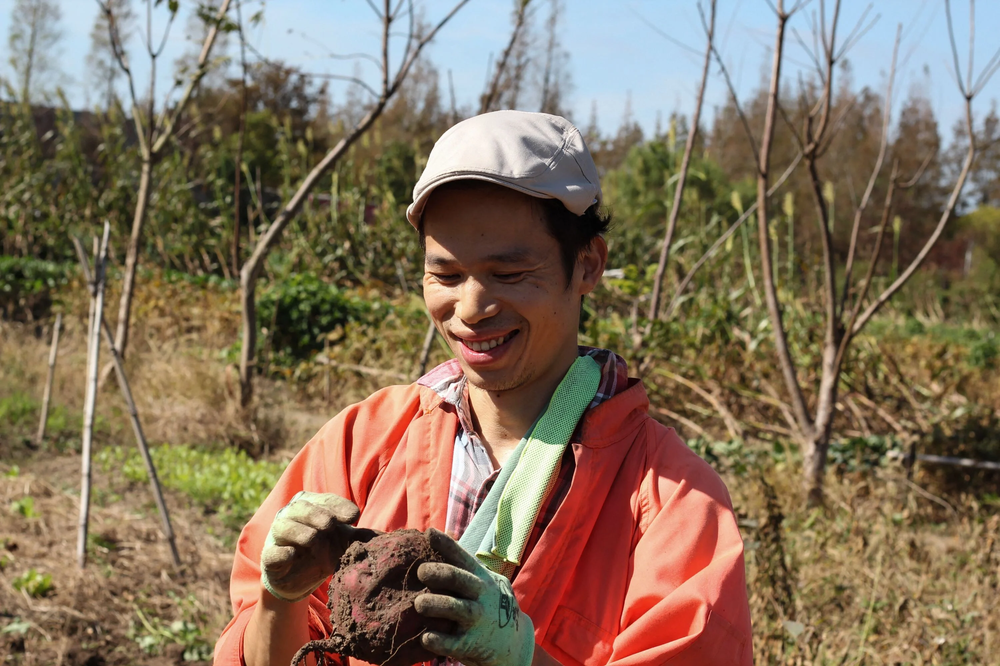
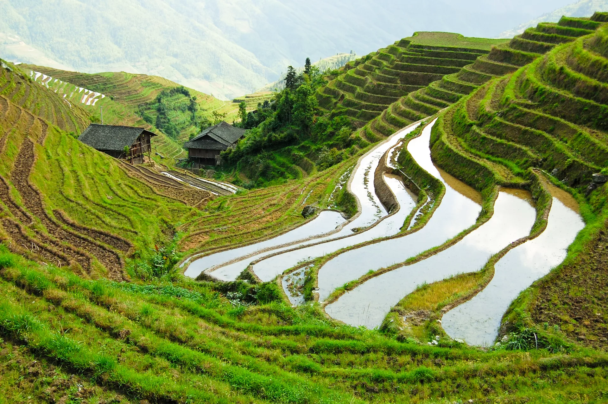
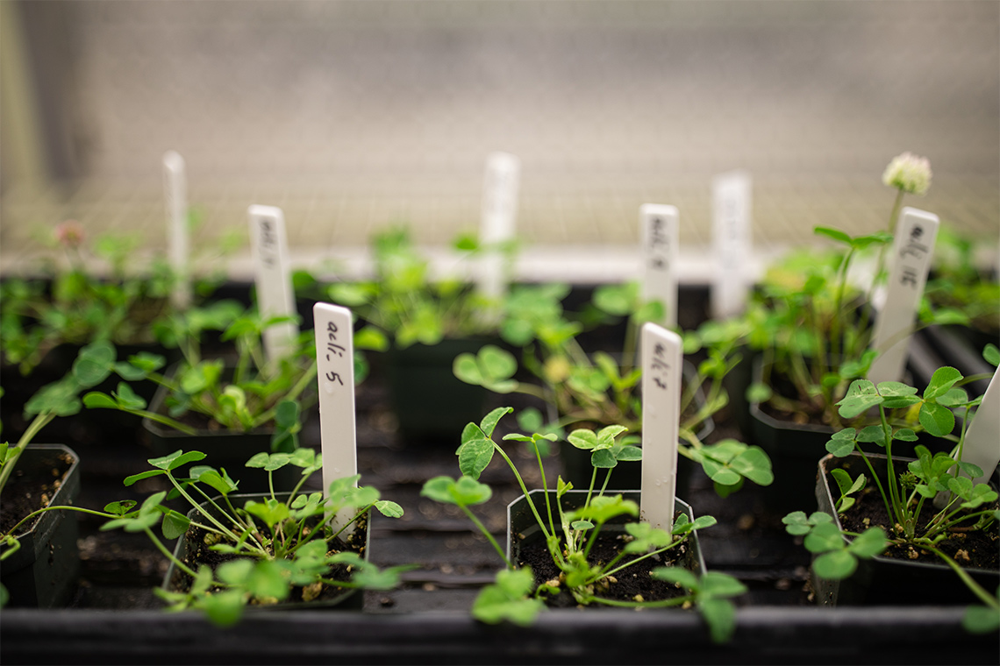

Urbanization: trend, future challanges, situation nowadays, statistics and all you should know about this
Introduction
Today, some 56% of the world’s population – 4.4 billion inhabitants – live in cities. This trend is expected to continue, with the urban population more than doubling its current size by 2050, at which point nearly 7 of 10 people will live in cities. With more than 80% of global GDP (Gross domestic product) generated in cities, urbanization can contribute to sustainable growth through increased productivity and innovation if managed well. However, the speed and scale of urbanization brings challenges, such as meeting accelerated demand for affordable housing, viable infrastructure including transport systems, basic services, and jobs, particularly for the nearly 1 billion urban poor who live in informal settlements to be near opportunities. Rising conflicts contribute to pressure on cities as 50% of forcibly displaced people live in urban areas. Once a city is built, its physical form and land use patterns can be locked in for generations, leading to unsustainable sprawl. The expansion of urban land consumption outpaces population growth by as much as 50%, which is expected to add 1.2 million km² of new urban built-up area to the world by 2030. Such sprawl puts pressure on land and natural resources, resulting in undesirable outcomes; cities represent two-thirds of global energy consumption and account for more than 70% of greenhouse gas emissions. Cities are also in the frontline of combating epidemics. The COVID-19 pandemic was a massive challenge for cities and their citizens, rich and poor alike. Its impact and the measures taken to control the spread of the virus had disproportionate impacts on the poor, marginalized and vulnerable, revealing fault lines in cities’ economic structure, preparedness for such a crisis – especially the state of their public health and service delivery systems.
Intresting statistics: urban populations tend to have higher living standards
There are many examples — across broad areas of development — which suggest that, on average, living standards are higher in urban populations than in rural. Some examples include:
- in nearly all countries electricity access is higher in urban areas than in rural areas;
- access to improved sanitation is higher in urban areas;
- access to improved drinking water is higher in urban areas;
- access to clean fuels for cooking and heating is higher in urban areas;
- child malnutrition is lower in urban settings.
Note, however, that it is difficult to infer causality between urbanization and these examples. Since urbanization shows a strong correlation with income, such relationships may instead simply show the effect of higher incomes on electricity access, sanitation, drinking water and nutrition. Furthermore, there can also be significant inequalities within urban areas; this is evidenced by the fact that across many low-to-middle income countries a high share of the urban population live in slum households (which lack access to all of the basic resources).
Urbanization after pandemic
A new United Nations report says that rapid urbanization was only temporarily delayed by the COVID-19 pandemic, with the global urban population back on track to grow by another 2.2 billion people by 2050. The large-scale flight from major cities in the early stages of the pandemic to the perceived safety of the countryside, or smaller towns, was a short-term response that will not alter the course of global urbanization, according to the UN-Habitat’s flagship World Cities Report 2022 – Envisaging the Future of Cities. “Together, India, China and Nigeria will account for 35 per cent of the projected growth of the world’s urban population between 2018 and 2050…It is projected that India will have added 416 million urban dwellers, China 255 million and Nigeria 189 million,” said DESA, announcing the findings on Wednesday. The report also estimates that by 2030, the world could have 43 so-called megacities (up from 31 today, according to reports) – those with more than 10 million inhabitants – most of them in developing countries. By 2028, the Indian capital, New Delhi, is projected to become the most populous city on the planet. Currently, Tokyo is the world’s largest, with an agglomeration of 37 million inhabitants, followed by New Delhi (29 million), and Shanghai (26 million). Mexico City and São Paulo, come next; each with around 22 million inhabitants.
URBAN TRENDS IN USA

Over the country’s long history of urbanization, cities like New York, San Francisco and Chicago swelled not only in population, but also in their prominence as American cultural icons. That cachet helped these metropolises thrive even when economic conditions were challenging elsewhere, providing landlords and other commercial real estate stakeholders with a level of stability and security smaller cities couldn’t match. In recent years, though, these storied cities started falling victim to their own success. Unebbing demand for limited residential and commercial space led to skyrocketing costs, and near-constant expansions and enhancements to government services necessitated new fees and higher taxes. At the same time, the emergence of remote working meant that people didn’t have to move to these uber-expensive cities to work for the companies that called them home. New technology, combined with cost of living and quality of life concerns, chipped away at that old preeminence, and businesses and individuals started choosing Atlanta over New York, Denver over Chicago and Austin over San Francisco. A Brookings Institution study found that population growth in the country’s largest urban areas dropped by almost half through the 2010s. The COVID-19 pandemic amplified some of the disadvantages of living and working in densely populated cities and accelerated that migration. An October 2020 survey by freelancing platform Upwork found that as many as 23 million U.S. workers planned to move due to work from home flexibility, a near-term migration rate four times the usual level. Twenty percent of those planning to move were based in major U.S. cities. In San Francisco alone, 89,000 households have left the city, according to Public Comment in an analysis for USPS, and new office lease activity fell 71% in 2020 compared to the prior year, from 7.7 million to 2.2 million sq ft, according to Cushman & Wakefield. In New York City, January 2021 leasing volume was down 47% year-on-year, according to Colliers. The pandemic also boosted adoption of e-commerce, putting additional pressure on bricks-and-mortar retailers. Recent surveys have found that several years of e-commerce adoption has been compressed into a matter of months as a result of the pandemic. The impact of this exodus goes beyond just quieter streets and emptier buses. The ensuing loss of tax revenue couldn’t come at a worse time for major cities already struggling with the enormous cost of combating COVID-19. A December 2020 survey of 901 city governments by the National League of Cities found that almost 70% had seen a negative financial impact from the pandemic, with respondents reporting a 21% drop in revenue and a 17% increase in expenditures, on average. And while many individuals and businesses can relocate, landlords and other commercial real estate organizations don’t have that option—their fortunes are inextricably linked to the recovery wherever their properties are located. These commercial real estate stakeholders are facing unprecedented vacancy rates and an uncertain path to recovery as the pandemic retreats.
Downside of urban life. Chinese millennials are quitting their ‘empty’ city jobs to find fulfilment as farmer
Hu Siqin had a promising career in Shanghai with a Fortune 500 company and more than enough money, but something was missing under the bright lights of the big city, a sense of what she calls "roots". So the 33-year-old chucked it all in to lay down literal roots as part of a new back-to-the-farm movement in which young Chinese professionals are quitting the rat race for the simple joys of an organic lifestyle. "People like me don't feel that material comforts stimulate us, and deep down we remain unsatisfied," says Hu. "So we’ve started thinking, what is the purpose of our lives? What am I living for?" In many ways, it's a return to what once was. Before the 20th century China was a primarily agrarian country for thousands of years. The ruling Communist Party, however, has encouraged urbanisation and migration to growing cities for decades - to build a more modern, consumer-oriented economy. Nowadays, millions of young Chinese people are increasingly uninspired by modern society's long work hours and meagre pay, urban congestion and high living costs, so they have fled to start a new life.
“Happy on the outside, but empty inside"
Hu, who has worked in marketing and supply chains for French companies like personal-care giant L'Oreal and sports retailer Decathlon, says that in her career she "appeared happy on the outside, but felt empty inside." She now sows organic, pesticide- and fertiliser-free sweet potatoes, long beans and other crops on rented plots of land with like-minded friends on Chongming, a large, primarily agricultural island on Shanghai's outskirts. Hu can barely contain her delight as she pops sweet potatoes out of the soil and samples sorghum plants that tower over her. "So sweet!" she exclaims, biting into a stalk of the grain. According to the government, around 20 million people have joined what it terms a "new farmer" movement, some of whom have millions of social media followers as they post on their lifestyles. China's government has recognised the potential advantage of an influx of tech- and business-savvy millennials bringing new ideas and enthusiasm to an agri-sector still largely dominated by longtime peasant farmers, and has pledged financial and policy support.
A stress-free, sustainable lifestyle
For "new farmers" like Liang Funa, 34, it's about enjoying a healthy, peaceful and more sustainable life. The former ad executive felt burnt-out due to excessive work hours and a deeply unhealthy lifestyle. "Our generation is under huge pressure, and people who stay in cities can't see many other choices," he said. "The people around them talk constantly about buying a house or a car or getting married, like these are the only measures of success and there are no other roads available." Liang, who moved to Chongming three years ago, has had to rapidly learn horticulture, while dabbling in side work online for extra income. But his life is now relatively stress-free, and Liang has realised just how few consumer goods he really needs.
Urbanization is driving evolution of plants globally, study finds
Humans re-shape the environments where they live, with cities being among the most profoundly transformed environments on Earth. New research now shows that these urban environments are altering the way life evolves. A study led by evolutionary biologists at the University of Toronto Mississauga and including the University of Washington Urban Ecology Research Lab examines whether parallel evolution is occurring in cities all over the world. In findings published March 18 in the journal Science, the Global Urban Evolution Project (GLUE) analyzed data collected by 287 scientists in 160 cities in 26 countries, who sampled the white clover plant in their cities and nearby rural areas. What they found is the clearest evidence yet that humans in general, and cities specifically, are a dominant force driving the evolution of life globally. “We’ve long known that we’ve changed cities in pretty profound ways and we’ve dramatically altered the environment and ecosystems,” said co-lead author James Santangelo, a doctoral student at the University of Toronto Mississauga. “But we just showed this happens, often in similar ways, on a global scale.” The researchers examined white clover because it is one of the few organisms present in almost every city on Earth, providing a tool to understand how urban environments influence evolution. The study illustrates that the environmental conditions in cities tend to be more similar to each other than to nearby rural habitats. In that sense, downtown Toronto is more comparable to downtown Tokyo in many ways than it is to surrounding farmland and forests outside of the city. In addition to observing global adaptation to cities, researchers identified the genetic basis of that adaptation and the environmental drivers of evolution. White clover produces hydrogen cyanide as both a defense mechanism against herbivores and to increase its tolerance to water stress, and the study found that clover growing in cities typically produce less of it than clover in neighboring rural areas due to repeated adaptation to urban environments. It is the changes in the presence of herbivores and water stress in cities that is pushing white clover to adapt differently than their rural counterparts. That finding holds true for cities across various climates, and the implications reach far beyond the humble clover plant. “Increasing evidence shows that urbanization is causing rapid evolution in heritable traits of many plants and animal populations which provide important ecosystem functions that support human well-being, such as nutrient cycling, seed dispersal and biodiversity,” said co-author Marina Alberti, UW professor of urban design and planning. “Finding a clear signal that cities are altering trait changes across the globe has important implications for ecosystems’ adaptive capacity that enables their stability and resilience in the face of rapid global environmental change.” The information from this study can be used to start developing strategies to better conserve rare species and allow them to adapt to urban environments, researchers said. It can also help experts better understand how to prevent unwanted pests and diseases from adapting to human environments. In collecting more than 110,000 clover samples and sequencing more than 2,500 clover genomes, the team also created a massive dataset for further research. “This study is a model to understand how humans change the evolution of life around us. Cities are where people live, and this is the most compelling evidence we have that we are altering the evolution of life in them. Beyond ecologists and evolutionary biologists, this is going to be important for society,” said co-author Rob Ness, an assistant professor of biology at the University of Toronto Mississauga.